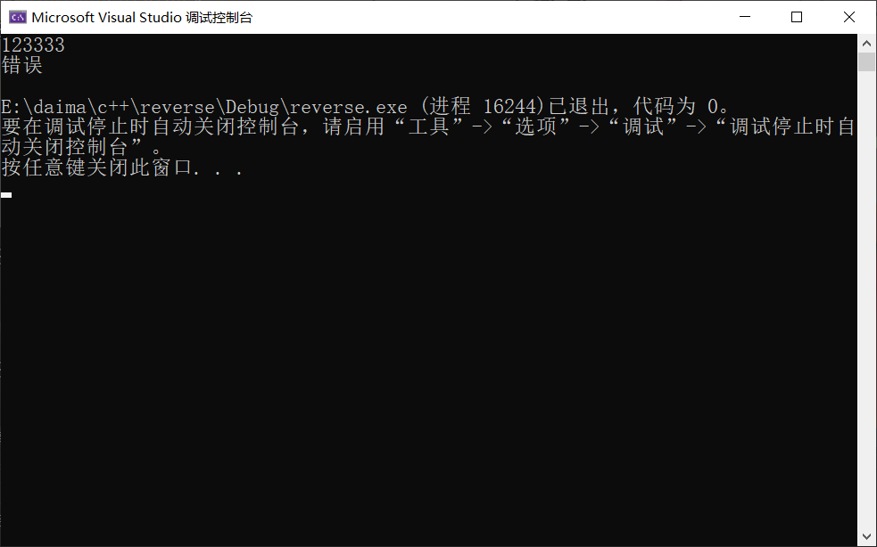
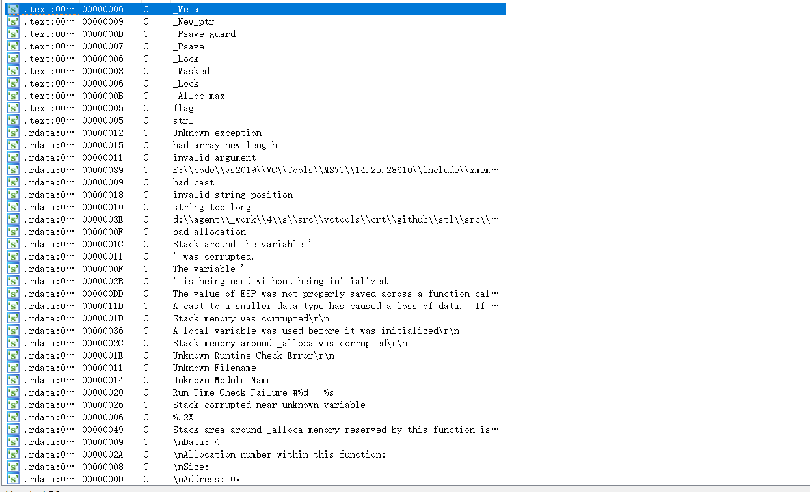
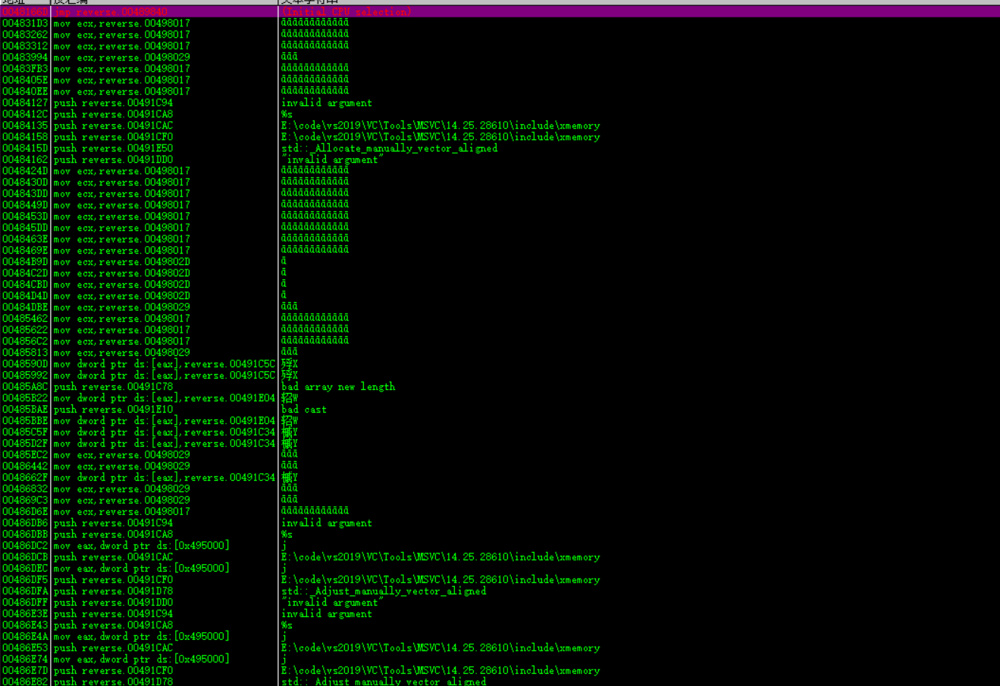
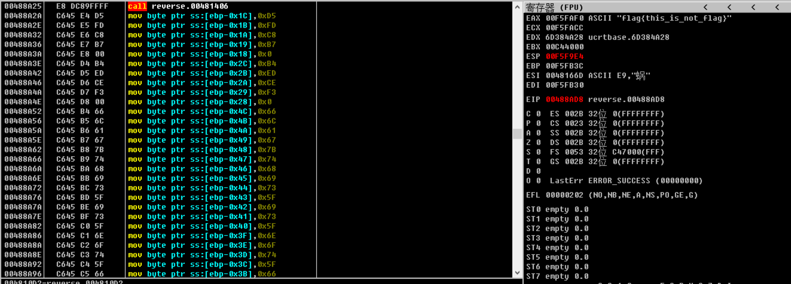

如何写一个ida和ollydbg搜索不到字符串的程序
先上代码
#include <iostream>
#include<string>
int main()
{
char str[] = { 0xD5, 0xFD, 0xC8, 0xB7, 0x00};
char str1[] = { 0xB4, 0xED, 0xCE, 0xF3, 0x00};
char flag[] ={ 0x66 ,0x6C ,0x61 ,0x67 ,0x7B ,0x74 ,0x68 ,0x69 ,0x73 ,0x5F ,0x69 ,0x73 ,0x5F ,0x6E ,0x6F ,0x74 ,0x5F ,0x66 ,0x6C ,0x61 ,0x67 ,0x7D ,0x00 };//flag{this_is_not_flag}
std::string a;
std::cin >> a;
if (a == flag)
{
std::cout << str << std::endl;
}
else
{
std::cout << str1 << std::endl;
}
return 0;
}程序很简单就是判断输入的字符串是否等于flag{this_is_not_flag}，运行结果如下。

OD中运行结果

ida中运行结果

为什么搜索不到字符串呢？因为在ida和OD中，搜索字符串都是判断结尾的标志’\0’,而像上述代码中字符串采用的是二进制形式，就不能搜索到’\0’,其实字符串是被加载到了内存中，但是我们要是把字符串定义成全局变量了，ida和od就能搜索到了，这时字符串被加载到了堆栈中。
